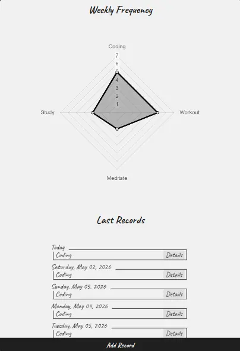

Redujo drásticamente costos en recursos de la organización y demostró una estabilidad a largo plazo que permitió su comercialización.
EDGAR PARUCHO PALMA
Desarrollador Front-EndConstruyo sitios y aplicaciones web de alto rendimiento y visualmente atractivos.
Go to the English version
Mantra
App de Help Desk
Microfilms Center


Estabilidad e impacto financiero
Consistencia y resultados
Centraliza procesos críticos lo que mejora la consistencia de la información, la comunicación del equipo, el margen de error y tiempos de gestión.
Integración y disponibilidad
Permitió por primera vez la integración multidepartamental y el acceso remoto a la principal herramienta de gestión y fuente de la verdad.
Seguridad y Centralización Operativa
Consolidó la consistencia de datos y proporcionó acceso remoto para los equipos de trabajo.
Front-End
- Vue.js (v2)
- Vuetify
- Vuex
- Vue-Router
- Options API
- Vue-CLI
- PWA
- Chart.js
Back-End y Base de Datos
- Node.js
- Express.js
- MongoDB
- REST API
- JWT
- Mongoose
Mantra ahora pertenece a Microfilms Center
Proyectos
- Luthen
- Lighthouse
- Pensive





Front-End
- Vue.js (v3)
- Composition API
- Vite
- CSS Puro - Arquitectura BEM
- Chart.js
Back-End y Base de Datos
- Node.js
- Express.js
- REST API